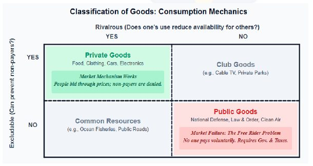
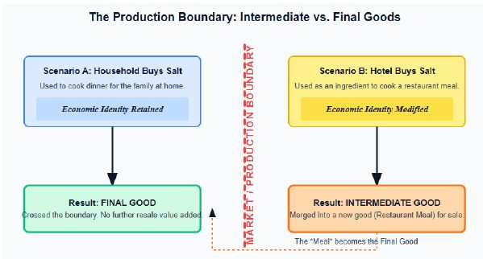

The handout asks “remember reasons for inequality?” when it says a pure free-market system creates inequality through natural advantages; the rule-of-law and rent-seeking points reappear.
Economy · GS Foundation · Chapter 4
Basic Concepts of Economics: PPF, Goods and Capital
Handout only: no class slidesHandout pages 1-201 Prelims PYQ quoted
The economist’s job, the production possibilities frontier, marginal cost and opportunity cost, free-market versus command systems, the types of goods (necessary, luxury, normal, inferior, substitute, complement, merit, demerit, Giffen, Veblen, private, public, intermediate, final, consumer, capital), fixed and working capital, investment and gross capital formation, and depreciation versus CFC versus CCA.
Chapter map#
- Basic concepts
Economist’s task
- Budget constraint + technology
- PPF: normative, dynamic sustainable maximum
- Advise, not decide
Two tools
- Marginal cost: one more unit
- Opportunity cost: next best foregone stadium vs hospital
Systems
- Free market: invisible hand inequality
- Command: rent-seeking information problem
- Friedman trade-off
Goods by demand
- Necessary vs luxury steep vs flat
- Normal vs inferior income
- Substitute vs complement cross-price
- Merit vs demerit externalities
- Giffen and Veblen
Public vs private
- Excludable and rivalrous
- Public: free-rider problem
- Government provides
Production boundary
- Intermediate vs final economic modification
- Salt: household vs hotel
- Second-hand = still final
Capital
- Consumer vs capital goods
- Fixed vs working capital
- Financial capital is not capital
Investment
- GCF = GFCF + Δinventory + valuables
- Stock vs flow
- Net = gross − depreciation
- Depreciation vs CFC vs CCA
Exam lens: priority and PYQs#
Prelims PYQ quoted in the handout
| Year | What was asked | Answer in handout | Where covered |
|---|---|---|---|
| 2021 | Other things unchanged, market demand for a good might increase if: 1) price of its substitute increases 2) price of its complement increases 3) it is an inferior good and income rises 4) its price falls | (a) 1 and 4 only | Section 4: substitutes (positive cross-price effect), complements (negative), inferior goods (demand falls as income rises), law of demand |
What the handout stresses
| Signal in the handout | Where | Why it matters |
|---|---|---|
| Production boundary: a good is final or intermediate by economic modification, not by its physical form. Salt for a household is final; salt for a hotel is intermediate | Section 6 | A classic Prelims trap; the base of GDP counting |
| “Investment” in economics is spending on capital goods (a flow), not buying shares or gold. Capital is a stock | Section 8 | Asterisked statement; flow versus stock |
| Depreciation (historical cost) versus CFC (current replacement cost) versus CCA (tax rule) | Section 9 | Three similar terms with three different owners |
| Giffen goods are inferior goods under special circumstances; Veblen goods are ultra-luxury | Section 4 | Both break the law of demand |
| Public goods: non-excludable and non-rival, so free-rider problem and market failure | Section 5 | Marked with a star in the handout |
1 · The economist’s task: budget, technology and the PPF#
The economic problem is limited resources and unlimited wants. The economist cannot create more resources or reduce desires, and is not the decision-maker. The decision-maker (a person, family, firm, community or government) chooses; the economist’s main task is to advise whether the current use of resources is optimal. He first assesses two things:
- (a) Budget constraints: the resources that actually limit output. All resources are limited, but only some are limiting (for a farmer it may be water or fertiliser, not seeds).
- (b) The prevailing technology: the current manner of using resources (stone tools, iron tools, tractors and harvesters).
Given these, the decision-maker has many options (chairs or tables, tobacco or mango or wheat). The economist estimates the maximum sustainable output for each possibility. That is the Production Possibilities Frontier (PPF).
The handout’s hunter-gatherer PPF (8 hours of daylight)
| Scenario | Deer hunted | Berries gathered |
|---|---|---|
| A | 10 | 0 |
| B | 8 | 200 |
| C | 6 | 380 |
| D | 4 | 530 |
| E | 2 | 630 |
| F | 0 | 700 |
Reading the table (simple arithmetic on the handout’s figures): every 2 fewer deer buys 200, 180, 150, 100 and then 70 more berries. Each sacrifice buys less than the one before.
- The PPF is a normative concept: every economist has an assessment. Actual output is a fact; the PPF is a “sustainable-potential” benchmark.
- Below the PPF: possible but not desirable. Beyond the PPF: desirable but not sustainably possible (working 15 hours a day).
- It is not cast in stone: better technology pushes it out. Today there are “less deer but more bullets”: time is no longer the constraint, the number of deer is.
- The economist’s key role: help society reach the PPF, an output both desirable and sustainably possible.
2 · The two tools: marginal cost and opportunity cost#
Marginal cost versus opportunity cost
| Marginal cost (MC) | Opportunity cost (OC) | |
|---|---|---|
| Meaning | The actual, tangible cost of producing one more unit at the current level of output | The benefit foregone when a choice is made: the value of the next best alternative given up |
| Nature | Resources actually spent | A conceptual cost, not necessarily financial |
| Use | Prevents overreach: the best resources are used first, so more output becomes harder and dearer. A high MC is justified only if the marginal benefit is equally high | Forces the decision-maker to look past visible results to what was sacrificed |
| Handout example | Stadium: cement, steel and labour bought | Stadium: the rural hospital or school that the same resources could have built |
3 · Systems of resource allocation: decentralised versus centralised#
Two extremes (seen as systems of information and incentives)
| Decentralised (libertarian, free market) | Centralised (authoritarian, command) | |
|---|---|---|
| Core mechanism | Individuals have liberty to own, trade and allocate. Millions of consumers and producers use prices as signals | An authority (king, dictator, politburo, feudal lord, even an elected government with such powers) directs the use of resources. Central planning replaces the market |
| Role of the state | Laissez-faire. Only the “invisible infrastructure”: rule of law, private property, contract enforcement, truthful information, preventing fraud and violence, minimal regulation (car safety standards) | Controls or directs resources; intent is “deeply moral”: equitable, socialist distribution and protecting the vulnerable |
| Incentive | Self-interest (Adam Smith): to profit, a producer must offer what society values. Self-interest gives collective well-being: the invisible hand. Market punishes waste and rewards competence | The state cannot meet all demands, so it appoints private entities as state-created monopolies (licences, quotas). The incentive shifts from serving consumers to being connected: rent-seeking (cronyism) |
| Critique | People differ in capabilities, capital and luck, so the capitalists come to dominate. Raises absolute wealth but produces high inequality from natural advantages | Information problem: no planner can know the subjective wants and opportunity costs of millions. Designed to reduce inequality, it creates a rigid, worse kind (wealth goes to the politically connected, and even a more competent producer is denied) |
4 · Types of goods: applying demand and supply#
Goods classified by how demand behaves
| Pair | Defining behaviour | Curve | Examples |
|---|---|---|---|
| Necessary vs Luxury (price elasticity) | Necessary: high utility, inelastic; a big price change barely moves Qd. Luxury: lower utility, elastic; demand rises a lot when price falls slightly | Necessary: steep (near vertical). Luxury: flat (near horizontal) | Staples, life-saving drugs, salt vs high-end home décor, premium electronics, vacation packages |
| Normal vs Inferior (income elasticity) | Normal: demand rises with income, curve shifts right. Inferior: demand actively falls as income rises, curve shifts left | Shift right / shift left | Cars instead of bicycles, nutritious food vs coarse grains, public transport, second-hand clothing |
| Substitute vs Complementary (cross-price) | Substitutes: demand for A rises when price of B rises (positive cross-price elasticity). Complements: demand for A falls when price of B rises (negative cross-price elasticity). In complements one good leads and the other complements it | - | Coffee and tea; cars and petrol, bread and butter, printers and ink cartridges |
| Merit vs Demerit (effect on society) | Merit: positive externalities, under-consumed by the free market. Demerit: negative externalities, over-consumed | - | Education, healthcare, vaccines, libraries vs alcohol, tobacco, recreational drugs |
Exceptions to the law of demand: Veblen and Giffen
Upward-sloping demand
| Veblen goods | Giffen goods | |
|---|---|---|
| What they are | Ultra-luxury goods; almost nil marginal utility over cheaper luxury versions; they give social status | Inferior goods that, in special circumstances, show demand rising with price |
| Why price up means demand up | Status comes at a price. If the price falls, those who could afford it no longer find the unique status, so demand falls (and those who could not afford it still cannot) | Must take a massive share of a poor consumer’s income and have no cheaper substitutes. A price rise makes him so much poorer he drops the costlier normal good and buys even more of the staple |
| Handout example | Luxury sports cars, designer jewellery, heritage items, rare animal breeds | Worker spends 90% of income on coarse grain and 10% on meat. Grain price rises, meat becomes unaffordable, the worker buys more grain. The negative income effect overpowers the substitution effect |
| Reality | - | Mostly theoretical, rarely observed |
5 · Private goods versus public goods#
The classification uses two characteristics: excludability (can you stop someone using it if they do not pay?) and rivalry (does one person’s use reduce what is left for others?).

Private versus public
| Private goods | Public goods | |
|---|---|---|
| Characteristics | Excludable and rivalrous. Consumers bid through prices for limited supply: “market efficiency” | Non-excludable and non-rival |
| Result | Provided by the market | Free Rider Problem (FRP): everyone expects someone else to pay, so no private business will produce it. A permanent unmet desire: market failure |
| Who provides | Producers | Government: society gives someone authority to collect taxes and the responsibility to provide. “This is how a government comes into existence” |
| Examples | Food, clothing, cars, electronics | Law and order (police), defence, administration, licensing and regulatory services, streetlights and lighthouses |
Because government resources are limited, it provides only the most vital ones, prioritised by necessity (police presence may be higher in one area than another). Because there is no rivalry, one person’s use does not reduce availability to others.
6 · Intermediate versus final goods: the production boundary#
This classification is crucial for calculating National Income (GDP). A good is not inherently intermediate or final; it depends on end-use.

- Intermediate goods (IG): used as inputs for other goods for resale; their economic identity is lost (modified into a new good meant for sale).
- Final goods (FG): economic identity retained; no further economic modification, even if physically or chemically changed.
- Crucial: the new good may or may not be physically or chemically different. What matters is only whether it was economically modified.
The handout’s examples
| Case | Classification | Reason |
|---|---|---|
| Salt bought by a household (cooked at home) | Final | Home-cooked food is not sold; no new commercial identity |
| Salt bought by a hotel | Intermediate | The meal is sold; the salt’s value merges into the price of the dish |
| Mobile phone, screen guard and cover used together | All final | Physical assembly by the consumer is only a way of using final goods; no commercial value added for resale |
| Phone sold second-hand after 3 years | Still final | Identity was finalised at first purchase; resale is only a transfer of ownership of an existing final good, no new production |
7 · Consumer goods versus capital goods; fixed versus working capital#
Both consumer goods and capital goods are sub-categories of final goods: neither is transformed and resold.
- Consumer goods: final goods for household consumption (non-producers). By replacement frequency: durables and non-durables.
- Capital goods: machines and tools that assist production; bought by producers. Unlike raw materials (used up in one cycle) they last for many production cycles. They are still final goods.
- In the System of National Accounts (SNA) capital goods are produced assets “used repeatedly or continuously in production processes for more than one year”: factory buildings, heavy machinery, blast furnaces, delivery trucks, tractors, and intangibles such as commercial software and R&D.
Fixed capital versus working capital
| Fixed capital | Working (circulating) capital | |
|---|---|---|
| What | Assets retained and used repeatedly over more than one accounting year | Capital used up in day-to-day operations; identity modified or liquidated within a production cycle or under a year |
| Role | The rigid “infrastructure” of capacity; not for immediate resale | The “blood” through the infrastructure |
| Examples | Plants, machinery, equipment, buildings | Raw-material inventory, work-in-progress, cash for wages and utilities |
8 · Investment and gross capital formation#
In everyday language investment means mutual funds or gold. In macroeconomics that is merely a transfer of financial assets: not investment. Investment is the expenditure by firms on capital goods in a period (usually a year).
Stock versus flow
| Capital | Investment | |
|---|---|---|
| Type | Stock variable | Flow variable |
| Meaning | Total value of machines a firm currently owns | Money spent buying new capital goods over a period |
Institutions such as the IMF, OECD and India’s National Accounts Statistics call it Gross Capital Formation (GCF): “the total value of the gross fixed capital formation, changes in inventories, and acquisitions less disposals of valuables for a unit or sector.”
Components of investment
Total investment (GCF)
= GFCF + Δ Inventory + Valuables
1 · GFCF (Gross Fixed Capital Formation)
Addition to the stock of fixed capital before depreciation: machines, tools, software, buildings, new roads, factories, intellectual property. The most important component. A high GFCF share of GDP signals a rapidly industrialising, future-focused economy
GFCF has three parts
a) business fixed investment (machinery), b) public investment (roads, bridges), c) residential construction investment (houses)
2 · Δ Inventory
Unsold or unused stock, treated by convention as capital. A factory makes 100 cars and sells 90: the 10 unsold are added to inventory, as if the firm invested in its own unsold goods
3 · Acquisition of valuables
Non-financial assets held as a store of value, not for production or consumption: monetary gold, diamonds, antiques
9 · Depreciation, CFC, CCA and maintenance#
Depreciation is the loss in value of capital goods from an actual or perceived loss of ability to assist production, commonly wear and tear. It is neither an actual loss nor an actual expenditure. Gross spending on capital goods is partly only replacement, so:
Three scenarios
| Case | Meaning | Effect |
|---|---|---|
| Net investment > 0 | More new machines than worn-out ones | Productive capacity expands (PPF shifts outward) |
| Net investment = 0 | Just enough to replace the broken ones | Economy is stagnant |
| Net investment < 0 | Not enough even to cover depreciation | Capital stock shrinks; capacity collapses |
Depreciation versus CFC versus CCA
| Term | Whose tool | Basis | Handout example (machine bought for ₹10 lakh in 2015) |
|---|---|---|---|
| Depreciation | Corporate accountant (financial accounting) | Historical cost (original price) | Lasts 10 years, so ₹1 lakh deducted each year, even if a new machine now costs ₹25 lakh |
| Consumption of Fixed Capital (CFC) | National statistician and the RBI (SNA); used for NDP and NNP | Current replacement cost (today’s market price) | Replacing 10% of its capacity costs ₹2.5 lakh today, so CFC is recorded as ₹2.5 lakh, not ₹1 lakh |
| Capital Consumption Allowance (CCA) | Income Tax Department (tax lawyer’s tool) | Statutory rate set by the government; a “legal fiction”; applied on historical cost | Accelerated depreciation: writing off 40% of a solar plant in year one to encourage green energy, though it did not lose 40% of capacity |
Connects to#
The demand-and-supply and market-clearance ideas used for wage-rate unemployment are the same ones applied to goods here; Chapter 3 also refers to the SNA production boundary.
National Income Accounting handout (next in your PDF)
The handout says this chapter prepares you for it: final versus intermediate goods, GCF, depreciation, CFC and NDP/NNP are the building blocks of GDP.
Budget and Fiscal Policy handout
Public goods and merit goods explain why governments tax and spend; opportunity cost frames public spending choices.
Recall sheet#
Read once, hide it, then rebuild the chapter from memory.
- Economist advises: budget constraint + technology give the PPF. PPF is normative, dynamic, “sustainable and desirable”.
- MC = cost of one more unit. OC = value of next best alternative foregone (stadium versus hospital).
- Free market: invisible hand, inequality. Command: information problem, rent-seeking, rigid inequality. Friedman: equality before freedom gets neither.
- Necessary = steep, inelastic. Luxury = flat, elastic. Normal: income up, demand up. Inferior: income up, demand down. Substitute: positive cross-price. Complement: negative.
- Merit: positive externality, under-consumed. Demerit: negative externality, over-consumed.
- Giffen: inferior, big share of poor income, no substitutes. Veblen: ultra-luxury status good. Both: price up, demand up (in theory / status).
- Private = excludable + rivalrous. Public = neither; free-rider problem; government provides.
- Intermediate versus final is about economic modification: household salt final, hotel salt intermediate; second-hand phone is still final.
- Capital goods: final goods used repeatedly for more than one year. Fixed versus working capital. Financial capital is not capital.
- Investment = spending on capital goods (flow). GCF = GFCF + Δ inventory + valuables. Net investment = gross − depreciation.
- Depreciation (historical cost, accountant) versus CFC (replacement cost, statistician, NDP/NNP) versus CCA (tax rule).
- Blank page: draw the excludable-rivalrous 2×2 and place private, club, common and public goods.
Test yourself#
Practice questions below are written from the handout. They are not past-year questions.
Quick quiz
0 / 0 correct
Mains practice: answer skeletons
Try the answer on a blank page first, then open the skeleton.
What is the PPF? Why does the handout call it normative and dynamic?
Intro: The PPF is the sustainable, desirable maximum output given budget constraints and technology.
- Economist assesses limiting resources and technology, then each possible product mix.
- Hunter-gatherer example: 8 hours of daylight; deer versus berries.
- Below PPF possible but not desirable; beyond it not sustainable.
- Normative: each economist’s assessment; dynamic: technology and information change it.
Closing line: The PPF is a target to reach, not a fact to observe.
Distinguish marginal cost from opportunity cost. Why does the handout call opportunity cost the most powerful concept?
Intro: One is what you pay, the other is what you give up.
- MC: cost of one more unit at the current output; rises as best resources are used first.
- OC: next best alternative foregone; conceptual, not financial.
- Stadium versus rural hospital or school.
- Economics has no morals: it only shows the trade-off.
Closing line: Every choice is also a refusal.
Compare the decentralised and centralised systems of resource allocation. Why does each produce inequality?
Intro: Both are mechanisms of information and incentives, and both fail in a way.
- Free market: price signals, invisible hand, but those with capital dominate.
- Command: central planner’s information problem; rent-seeking; state-created monopolies.
- Command inequality is rigid and worse: connections, not competence.
- Friedman: equality before freedom gets neither.
Closing line: No system is perfect; each trades freedom against equality.
What are public goods? Why must government provide them?
Intro: Public goods are non-excludable and non-rival, so the market fails to supply them.
- Free-rider problem: no one pays voluntarily.
- Society creates government with the authority to tax and the duty to provide.
- Examples: law and order, defence, streetlights, lighthouses.
- Limited resources: only the most vital are provided, prioritised by necessity.
Closing line: Government exists because some goods cannot be sold.
Explain investment in the macroeconomic sense and distinguish depreciation, CFC and CCA.
Intro: Investment is spending on capital goods, a flow that adds to the stock of capital.
- GCF = GFCF + change in inventories + valuables; GFCF has business, public and residential parts.
- Net investment = gross investment − depreciation; the three scenarios.
- Depreciation: historical cost (accountant). CFC: replacement cost (national accounts). CCA: tax allowance (policy tool).
- Maintenance does not stop depreciation.
Closing line: Capital is what you own; investment is what you add to it in a year.
Flashcards
Tap the card to flip.